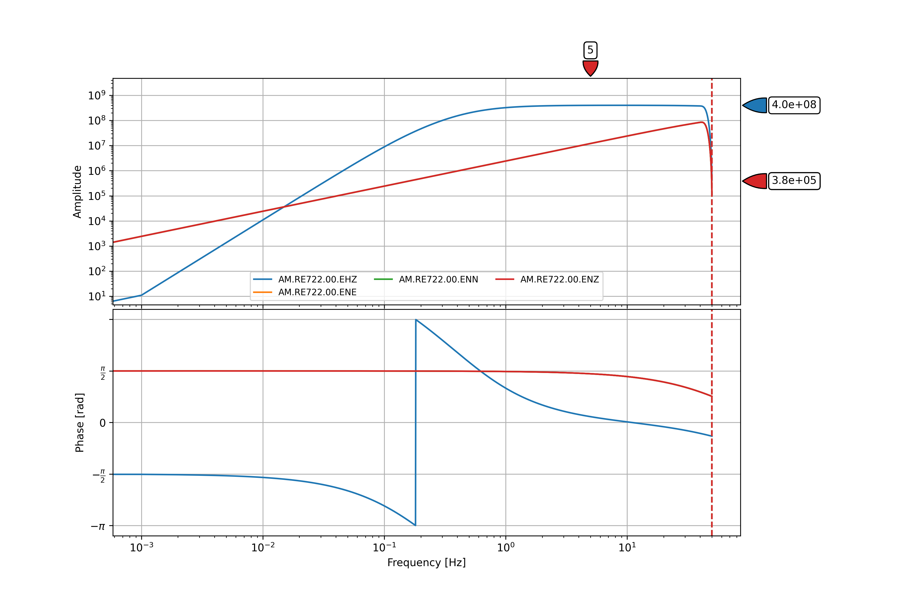

Programmatically Getting the Metadata¶
Note
The “metadata” or “instrument response files” complement the raw waveform data, providing the information that seismologists use for data processing, including:
gains, overall sensitivity, poles, zeros and filters needed to deconvolve the data and arrive at true ground motion
latitude, longitude, elevation (which are obfuscated to ~1 km to protect user’s identities)instrument type
any and all changes over time (since May, 2019)
To get individual instrument-response-file using python:
Make sure you have
pythoninstalled. To check if you have python properly installed, run this command in the terminal:
python --version
or
python3 --version
Note
If python is not installed yet, please refer to their official site to get the installer depending on your machine.
Install the necessary python packages:
pip install obspy matplotlib
Save the python script below into a file named
get_inst_resp_file.py.
from obspy.clients.fdsn import Client
from obspy import UTCDateTime
import argparse
def main(station_name):
try:
rs = Client('https://stationview.raspberryshake.org', _discover_services=False)
inv = rs.get_stations(network='AM', station=station_name, level='RESP')
fig = inv.plot_response(0.001, station=station_name, show=False, time=UTCDateTime.now())
# Save the instrument response plot into a PNG file
fig.set_size_inches(12, 8) # Set the output size
fig.savefig(station_name + "_inst_resp_file.png", dpi=300)
# Save the instrument response information into an XML file
inv.write(station_name + "_inst_resp_file.xml", format="STATIONXML")
# Print a message indicating the successful retrieval and saving of the instrument response files
print(f"[\033[92m OK \033[0m] ", end='')
print(f"Instrument response files for station '{station_name}' have been successfully retrieved and saved")
print(f"- PNG plot: {station_name}_inst_resp_plot.png")
print(f"- XML metadata: {station_name}_inst_resp_file.xml")
except Exception as e:
# Handle any exceptions that occur during execution
print(f"[\033[91m ERROR \033[0m] ", end='')
print(f"{e}")
parser = argparse.ArgumentParser(description="Retrieve and save instrument response files for a specified station.")
parser.add_argument("station_name" , help="Name of the station you want to get the instrument response file of")
args = parser.parse_args()
main(args.station_name)
Note
To get the instrument response file of other station, just change the value of the stn variable to your desired station name.
Run the python script in terminal using the command below. Specify the name of the station you want to get the instrument response of by changing the <station_name> argument to the device’s station name. (Note: Only the station name is required. No need to specify the network name.)
python3 get_inst_resp_file.py <station_name>
# i.e. python3 get_inst_resp_file.py RE722
After running the script, it will output a PNG file of the plot and an XML file of the instrument response information of the station specified in the script.
Sample Output
 Sample instrument-response-file of RE722 station in PNG format.